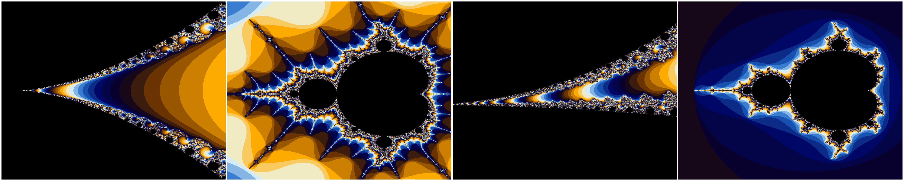

Introduction
I first heard about CUDA last year when I was trying to create pretty pictures called fractals. Skipping all the math mumbo jumbo, fractals are basically geometric patterns are self similar. You might have heard of the famous Mandelbrot set, that's a fractal! This is what it looks like:
Anyways, rendering this uses a fun little algorithm called the escape time algorithm. Basically you give every pixel a starting value, and then you repeatedly apply a mathematical function to it over and over again. If the absolute value of the result is greater than 2, we say that the sequence has "escaped" and the starting pixel is colored based on how many iterations it took to escape. If the sequence never escapes, the pixel is colored based on how many iterations it took to converge.
This is all the math you need to know for now, but if you're interested in the details you can read more here.
The struggle
Pretty basic algorithm right? Well, it turns out that rendering fractals is a compute-heavy task. The good thing is that each pixel is independent of the others, so it's a perfect task for a GPU. each computation is simple, and GPUs are designed to perform many of them at the same time.
The bad thing is that I dont have a GPU, I have a potato from 2019. So the first task was to get my hands on a GPU. Luckily, I found this website called Vast AI that lets you rent consumer GPUs for really cheap.
Once that was sorted, I had to actually learn CUDA. my go to resource for this was this book called "Programming Massively Parallel Processors"
After several nights and days of pain (4 hours) I was finally able to write a simple CUDA kernel along with some simple image processing code to render a Mandelbrot set.
Here are some results!
Speedup
using CUDA also achieved significant speedup in rendering these images, take the following times for example:

almost 40x speedup
The code for this can be found here. main.cu contains all the cuda code and some other stuff needed to generate these images
This is what the CUDA kernel looks like:
__global__ void mandelbrotKernel(unsigned char* image, int height, int width,
double x_min, double x_max, double y_min, double y_max,
int max_iteration) {
int i = blockIdx.y * blockDim.y + threadIdx.y;
int j = blockIdx.x * blockDim.x + threadIdx.x;
if (i < height && j < width) {
double x = 0;
double y = 0;
int iteration = 0;
double x_scaled = x_min + j * (x_max - x_min) / (width - 1.0);
double y_scaled = y_min + i * (y_max - y_min) / (height - 1.0);
while (x*x + y*y <= 4 && iteration < max_iteration) {
double xtemp = x*x - y*y + x_scaled;
y = 2*x*y + y_scaled;
x = xtemp;
iteration++;
}
int r = 0, g = 0, b = 0;
if (iteration < max_iteration) {
int colorIndex = iteration % 16;
r = d_colorMap[colorIndex][0];
g = d_colorMap[colorIndex][1];
b = d_colorMap[colorIndex][2];
}
int index = (i * width + j) * BYTES_PER_PIXEL;
image[index + 2] = (unsigned char) r; // Red
image[index + 1] = (unsigned char) g; // Green
image[index] = (unsigned char) b; // Blue
}
}Some more learnings
Other than just making pictures, CUDA can also be used for other things like matrix multiplication, neural network inference, and even machine learning!